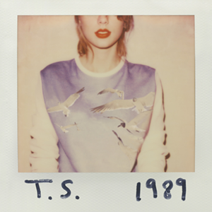

Lover

1989

Red TV
Hi, My name is Deepakkumar Sekar.I'm an Intern at Psiog Digital I was born in Namakkal and raised in Trichy. My family consists
of four members including me , my parents and my sister. I did my schooling in Trichy after which i joined in SASTRA Deemed To Be University.
I'm currently persuing my undergraduate in aerospace engineering at SASTRA . This internship is a part of 8th semester and also mandatory for
my employment at Psiog as a part of Training and Mentorship.
Even though I don't consider myself as an extrovert , i like engaging with
others.But I've not always been like this . I used to be quite shy and hesitant to talk to others ,then I joined in Ecell Promotions team in sastra.
Where I've coorganized promotional game event for Innovatia which helps aspiring entrepreneurs.I've joined in promotions team because i like challenging myself which helped me get rid of my shyness. Other than that, i've also been a part of college event organizing team INFRA.
I'd say,cooking and listening music are my hobbies.This Covid-19 lock down boredom made me want to do something satisfactory and interesting.
that's how i started cooking. And about my music, Taylor swift is my favourite singer .I'm just obsessed with her music. This Website design is inspired ny Taylor's
Lover album cover.
These are some of my favourite albums. Feel free to click and listen.